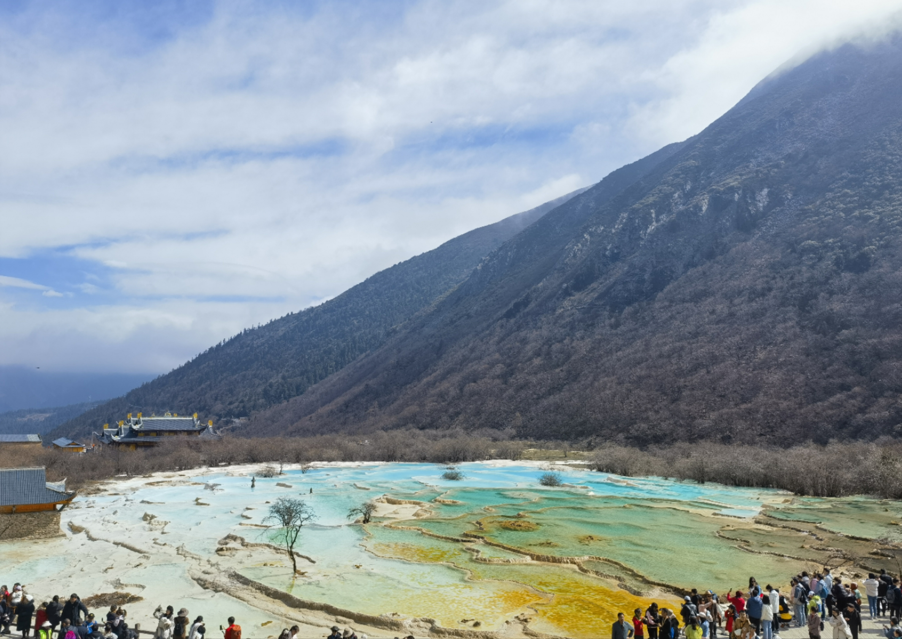
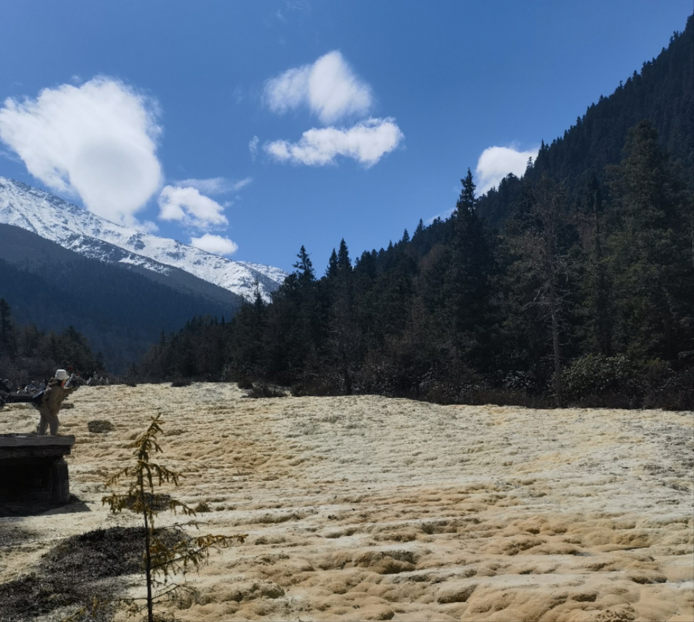

Travel Notes of Huanglong
In Aba Tibetan and Qiang Autonomous Prefecture, northwest of China, there are various beautiful and spectacular tourist attractions, including Jiuzhai Valley, Siguniang Mountain and Dagu Holy-glacier. Hopefully I can have the chance to visit all of them in the near future. Different from the elegant and gentle view of Jiangnan(south of the Yangtzi River) with misty rain, the scenery there is magnificent landscape with towering mountains and wide waters.
Around May Day’s holiday, numerous tour groups are promoting their tourism products that are attractive hoppingly. Since Chengdu is near Aba Prefecture (within a 9-hour coach ride), tourist attractions there are popular destinations.
It’s a pity that I couldn’t go to since I have to go back to hometown, but it recalls my journey to Huanglong and Jiuzhai Valley during May Day Holiday. Jiuzhai Valley is as charming as expected, and maybe because it covers such a huge area, the scene spot could accommodate the terrible flow of people during May Day well and have a nice experience. However, the visit to Huanglong National Scenic Spot left a lot of regrets.
There’re two ways to go to the peak: on foot or by cable car. I strongly recommend you to take a cable car unless you’re a mountaineering enthusiast, since scene spots are just alongside mountain paths and tourists go up and hike down share the same route. But then came my first regret, which is about the cable car. Confusingly, there’s a distance of 2.4km between the cableway station and hiking trail, and you can choose to walk or pay for the shuttle bus. But the footpath is very close to the driveway, and there isn’t much view. After arriving at the trail, you still need to climb up for around 1km to reach the peak and enjoy the most important tourist attraction - Colorful Pools. The good news is that Colorful Pools fit descriptions and are impressive. What’s more, when the sun shone on the top of the snow-capped mountain, I feel that my soul is purified.

However, then the journey was full of regrets. It was until I reached the foot of the mountain that I watched a notice and realized May Day is still in the off-season. In that the vast majority of places of interest in Huanglong depend heavily on water, while currently during the dry season, I could only see the exposed bottoms of pools. At most places, a sign explaining the attraction was erected nearby and I had to imagine its beauty since there is no or little water. The few sights I was able to enjoy were far from the beauty of their prime.

I sincerely encourage others visiting Huanglong during busy-season to fully experience its charm.